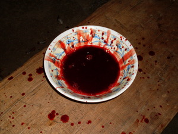
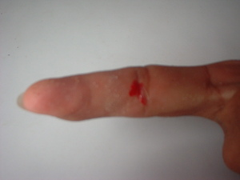

langesa  
/laŋɔsa/
n.
“blood”
n.
blood
Wrd.Gloss: blood
Eng. blood
Tag. dugô
Ceb. dugò
Ilo.: dára
Tigwanon: langesa
Binukid: langesa
Dibabawon: langesa
WBM: lengesa
Ilianen: lengesa
Cagayano: langessa
Obo: langasa
Proto: langesa
OCM: Ethnoanatomy (826)
DDP: Bleed, blood (2.2.5)
Online dict status: -
Usage level: B
v.
for someone,s wound (eglangesa, miglangesa/inlangesa, agent, eg><ø-) to bleed
Eng. bleed
DDP: Bleed, blood (2.2.5)
Online dict status: -
Usage level: M
vi.
for a woman (eglangeseen, patient, eg><en-) to menstruate; to have a monthly period
Cult. Considered vulgar language.
Minsan egkabuyag e ka inayen ku ne eglangeseen pad.
Even though my mother is old she still menstruates.
Eng. menstruate; period, monthly
DDP: Bleed, blood (2.2.5)
Online dict status: -
Usage level: M
v.
for someone (egpalangesa, migpalangesa/impalangesa, agent, eg><ø-pA-) to offer the blood of animals (e.g., creator or spirit) (egpalangesaan, egpalangesa:n, impalangesaan, impalangesa:n/migpalangesaan, migpalangesa:n/pigpalangesaan, pigpalangesa:n, location, eg><an-pA-)
Eng. offering blood; ritual
Online dict status: -
Usage level: M
Updated by: RJH,JLM,QDL
Last updated: 16/Dec/2009
"langesa" in healthbook "Anak ni Biltu ne migkerid"
"langesa" in healthbook "Anak ni Biltu ne migkerid"
"langesa" in healthbook "Miggendiye te huspital si Mirsi ka migtibi"
"langesa" in healthbook "Miggendiye te huspital si Mirsi ka migtibi"
"langesa" in healthbook "Miggendiye te huspital si Mirsi ka migtibi"
"langesa" in song "Legpad ku ne langun"
"langesa" in song "Manama te langun"
"langesa" in song "Malinis kad naa?"
This page last updated: 28-Dec-2019
Copyright © 2009-2014, Matigsalug Language Christian Association, Inc